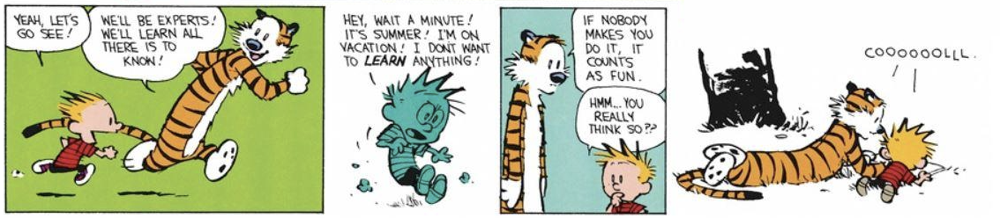

Alternatively: A hitchhiker’s guide to independent research
Here’s to the ones who dream
Foolish as they may seemShe told me
“A bit of madness is key
To give us new colors to see
Who knows where it will lead us?
And that’s why they need us”La La Land - “Audition (the fools who dream)”
A year ago, I wrote myself a letter. In it, I told myself that if I ever found an idea I had high conviction in, I would drop everything to give it a fair shot. I hoped that I would be ambitious in my dreams and to embody a quiet confidence in my own abilities and interests.
Rhizome turned out to be project that would let me do all of that. I spent this past summer doing independent research focused on how we can enable data neutrality on a web dominated by data moats. I had no academic research experience, barely knew anything about distributed systems, and didn’t personally know anyone else doing independent research. At the time, I had no idea this was even called independent research.
I’m not sure what about it drew me in exactly. The project started out with a smattering of thoughts around peer-to-peer networking and what I found frustrating about it. Yet, the project took up latent headspace, simmering away quietly only to surface mid-scrub in the shower or on a walk to the bus stop.
I knew that ‘good’ research practice usually involved writing a detailed research statement or proposal to present exactly what one would work on. I also knew that I had no clue how I would manifest the stirring pot of concepts into something legible. I spent the months leading up to summer bumping around in the dark, trying to phrase and form what exactly about this interested me so much. In my head it felt clear, but each time I tried to force those ideas through my fingers and onto the page they seemed to flit away and vanish, refusing to be expressed in any precise form.
At the time, this felt like useless floundering. After all, what kind of researcher doesn’t even know what they’re researching? Later on, I would find that this floundering was sense-making hard at work. Researching to figure out what you are researching… is still research. There is a certain amount of looking around and orienting yourself you need to do before you know what direction to head. I spent hours cautiously broaching the idea with friends over late night transit rides home. In most of those conversations, my friends nodded blankly, happy to see me obviously deeply invested into an idea but not really understanding what I was blabbing on about.
In these early days, I was often dejected. I felt incredibly foolish for pursuing something I had absolutely no reason to be so deeply invested in, and I felt foolish that I couldn’t explain why it felt so compelling to me. I felt terrible about my inability to get any grant money to sustainably work on this project. I felt a deep need to prove myself. Maybe it was to prove to myself that I wasn’t wasting my time. Maybe it was to prove to others around me that I was doing something just as valid as their internships, startups, or academic research.
Over the span of a month period, I had 3 separate emotional breakdowns
- On May 11th: “I can’t help but sometimes feel like I’m wasting my time — there are so many smart people working on the same problem, what makes me feel like I can be the one to make a meaningful contribution to it?”
- On May 16th: “I’m often spending 12+ hour days writing grants and I just feel so behind. And I don’t get why!!!! I’ve been looking forward to this summer for so long.”
- On May 27th: “Once again had a breakdown :)) Constantly feel like I’m not doing enough and that time is slipping between my fingertips…”
When I started with the project, I had a healthy dose of naivete, a belief that anyone could make a change and make their project work if they tried hard enough. But now, I started to believe that hard things are hard for a reason; I should leave hard problems to people who are actually skilled and have spent decades of their lives working on these problems. Who was I to think that I, an undergrad student who had still yet to take a distributed system course, would be able to contribute anything meaningful to this decades-old field?
In mid-conversation with someone who’s opinion I cared deeply about, I realized that I strongly needed to figure out how to untie my self-worth from my project.
Midsummer, on a whim, I picked up Annie Dillard’s The Writing Life from a local bookstore and read it cover to cover. In it, she mentions that the greatest teacher of writing is the blank page.
Who will teach me to write? a reader wanted to know.
The page, the page, that eternal blankness, the blankness of eternity which you cover slowly, affirming time’s scrawl as a right and your daring as necessity; the page, which you cover woodenly, ruining it, but asserting your freedom and power to act, acknowledging that you ruin everything you touch but touching it nevertheless, because acting is better than being here in mere opacity; the page, which you cover slowly with the crabbed thread of your gut; the page in the purity of its possibilities; the page of your death, against which you pit such flawed excellences as you can muster with all your life’s strength: that page will teach you to write.
I think it was this lone paragraph that was the turning point where I started to believe that this applied to my work too.
To do independent research is to learn how to confront the infinite possibility of a blank canvas. To not be intimidated by the possibility of making a fool of yourself, but to embrace the courage to even put brush to canvas, pen to paper. To assert your freedom and power to act.
The midwit would think it truly silly to try and change something as entrenched in our society as the very computing fabric we tap into everyday. But those who do not submit to this status quo recognize there is merit to trying regardless. Octavia E. Butler gestures to this tension between optimism and pessimism, and the possibility of actually breaking through to something new:
There is nothing new
under the sun,
but there are new suns.
— Octavia E. Butler, Trickster
The less beaten path is often less beaten for a reason. But if it feels right to take it — pushing aside the debris and brush and walk the trail because something, a bird or perhaps a ray of light, caught your eye — then take it.
This realization dawned on me slowly for me over the span of about a month. I wasn’t pursuing it because society deemed my research useful or that I knew it would eventually make me heaps of money or make me incredibly famous. At the end of the day, it was enough that this research is something that I wanted to spend time pursuing.

People will impose their limiting beliefs onto your world because it’s what governs theirs. They will tell you to stay in something you want to leave, will tell you to keep pushing toward something that feels wrong, feels misaligned. You always have a choice. You can yield to expectation, pessimism, set structures, or [you can take the other path].
— Nicole, internal confidence
I didn’t need to prove to anyone that what I painted on this metaphorical canvas was ‘worth’ the space that it took up. Instead of claiming to be some sort of expert who had all the requisite skills and knowledge, I began to see myself as an explorer, excited to share what I found with others. I let more people in to see what I was working on because I was excited to share what I found rather than afraid of what they thought of what I knew.
In early June, I had my first call with people who were as equally excited about the idea as I was. I saw seasoned veterans who have worked decades on related problems ask careful questions and gave my ideas serious consideration. These people, who I had thought would likely shun or ridicule my pursuit, turned instead to close collaborators and thought partners. This was refreshing. I was no longer pursuing it alone but also sharing this vision with others, seeing their eyes light up at the potential or future of it.
I found it invaluable to surround myself with people like this. I lived with others who were also incredibly intellectually curious about the world. They would ask “tell me more” instead of offering blank stares of ambivalence. Their close consideration and generous imagination enabled my work to truly blossom.
When people ask about where I am working this summer, I often laugh and reply “I’m ‘funemployed’! But what I’m really doing is independent research.”
Nine times out of ten, the follow up question they ask is “With who?” Usually, I laugh again and say that “that’s the fun part about independent research, I get to do it on my own!”
These days, if you say you work in research, most people assume you work in academia. But it’s sort of odd that we assume you need someone’s permission to do research. There’s no reason that universities need to be the gatekeepers of exploring and developing new ideas.
Nadia Asparouhova, The independent researcher
What people often find confusing is that independent research doesn’t mean I do it by myself. Rather, it refers to how my work is not tied to any particular institution. I think the whole career advice of doing internships at big companies and academic research being the two main options is incredibly flawed. Neither leaves much space for individuals to have time or space to figure out what they actually want to do with their life. Neither leaves space for individual sense-making.
Every few months, I’ll get an email or two along the lines of: “Help, I’m stuck in Leetcode hell, how do I escape and do other things?” I love these emails because I know these are people who have started that introspection process, an internal questioning of “what do I actually care about and why?” and are looking for containers and institutions for their work.
Sooner or later, that line of questioning leads to a question of hypothetical utopia. In a world where you don’t need to work to stay alive, what would you do? What gives you excitement and joy? Completely ignoring what other people tell you is useful or good, what do you find intrinsically beautiful and good to do in the world?
To most, the answer as to what they want is clear but the difficult question is how. Having dreams and working to make them a reality is a privilege in this world. I truly think it’s one of the greatest gifts of life but unfortunately not a gift very many get to have.
How might we create spaces for abundance so that more people have this sort of privilege? Édouard Glissant’s Archipelago gives a glimpse into a “future [which] lies not with the great powers, but with the little islands, lands, and cities.” Not all research needs to happen within the monolithic institutions in academia or profit-hungry companies. Perhaps the next generation of innovation and discoveries that advance society will be made through small squads banding together to build things, live together, and create something more intricate, comprehensive, and wonderful than any one individual could have achieved on their own.
Benjamin Franklin had the Junto Club, Tolkien and C.S. Lewis had The Inklings, Jobs and Wozniak had Homebrew. The Bloomsbury Group was integral to the success of Virginia Woolf, Clive Bell, and John Maynard Keynes, while MIT’s Model Railroad Club spawned much of modern hacker culture.
— James Mulholland, Small Group
To those who don’t take this path — parents included — what I’m doing seems a little foolish. But that’s not necessarily a bad thing. The fool is often characterized as naive, a beggar, a hedonist. But the fool is also many other things that more people should be.
The fool is the jester, daring to challenge what other people wouldn’t. The fool is the blazer of new trails, happily taking the less beaten path because he does not know better. The fool is the one who does things because they think it is worth doing, not for coin or status.

I leave this as an invitation to you. Ask yourself: “what do you really want?” Be honest with yourself. Get your hopes up a little bit; let yourself be a little foolish.
I know I’m naive; I’m a dreamer. But maybe we should get our hopes up for things sometimes. Maybe we shouldn’t dampen how we feel to avoid the possibility of disappointment. Maybe we should hope for and demand everything—ask for the world, the stars, and the ever-expanding universe for ourselves. Maybe naïveté is how we keep imagining in vivid colors, connecting with rich feelings, dreaming of diverse characters.
— Spencer Chang, quarter life commitment
Acknowledgements
It is with the generosity of my sponsors of GitHub, close friends, and you, kind reader, that I’m able to continue to do this type of work.
Thank you to Anson Yu, Spencer Chang, Sebastien Zany, Jamie Wang, Raymond Zhong, Vincent Huang, Justin Glibert, Morgan Gallant, Ryan Johnson, David Zhou, Aadil Ali, JZ, Nishant Medicharla, Anh Pham, Farzaa Majeed, Amir Bolous, Aaron Pham, Rishi Kothari, Jasmine Sun, and Athena Leong for your continued support. This independent research wouldn’t be possible without all of you.